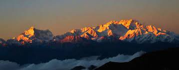

The Chadar Trek or the Zanskar Gorge trek is a winter trail over the frozen Zanskar River, which lies in the
Indian union territory of Ladakh. It is traditionally the only means of travel in the area during the harsh
winter months. The trail has become popular with foreign adventure tourists.